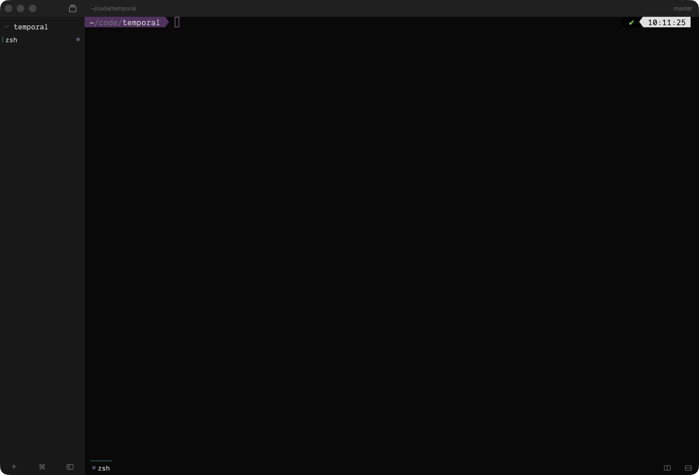
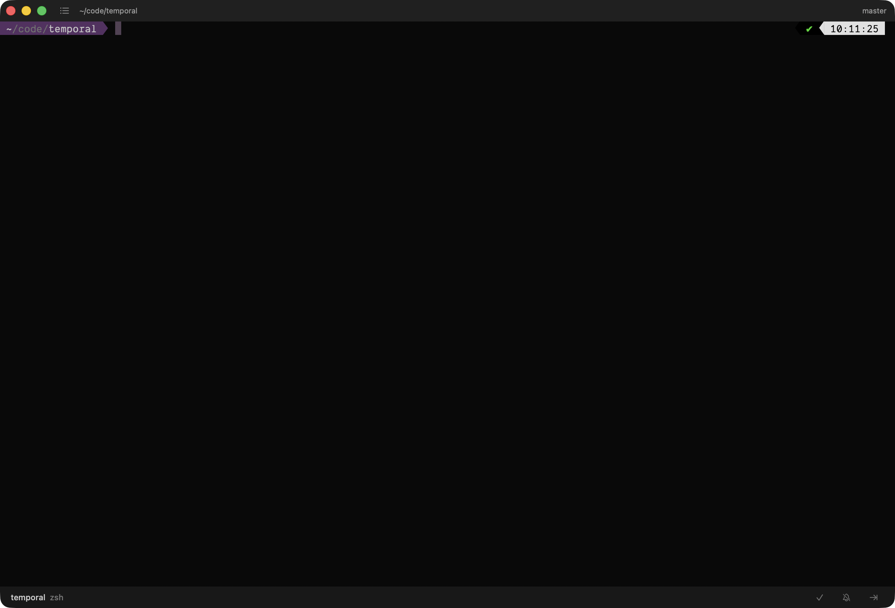

Focus on what's ready.
Forget what isn't.
Overseeing many parallel AI agents is hard. Forge is designed from the ground up to make it easy.

Close it. Open it.
Right where you left it.
Quit anytime. Reopen later. Every shell, split, and AI conversation is right where you left it.
Two ways to work
Switch between organized navigation and attention-driven triage with a single keystroke.
Organize
Sidebar groups terminals by project. Each tab holds an agent, a build, or a server. Split into panes. Swap a pane for a browser.
Triage
When agents finish, they queue up. Stack mode shows one at a time. Mark done, mute, or skip. Every agent stays exactly where you left it.

Tasks find you
Stop checking tabs. Forge layers four detection signals. Nothing slips through.
Silent Waiting
When your AI agent goes quiet at a prompt, Forge notices. It's your turn.
Bell & OSC 777
Listens for the terminal bell and OSC 777 notify sequences.
Command Completion
Notices when a long-running command finishes and returns to the shell.
Prompt Detection
Catches interactive prompts like "y/N" or "Allow once?".
Native macOS Notifications
Push to macOS Notification Center with custom sounds and per-tab preferences. Tap any notification to jump straight to the project, tab, and pane that fired it.
Everything you need, nothing you don't
Browser Panes
Split a WebKit browser pane next to your terminal. Forge scrapes your scrollback for localhost:3000-style URLs and suggests them in the address palette
Command Palette
⇧⌘P for all commands, ⌘P for quick tab switching across every project
Ghostty Themes
Ships with 30+ curated themes and accepts any Ghostty theme. Light/dark window appearance auto-detected from background
Keyboard Shortcuts
Every action has a shortcut. Fully customizable with conflict detection
Pane Splitting
Split any terminal horizontally or vertically. Watch an agent and its logs side by side
Native macOS
Built with SwiftUI. Not Electron. Not a web wrapper. Real native performance and integration
Isolated Socket
Runs on its own tmux server. Your existing tmux sessions are untouched
Deeply Customizable
Font, theme, shortcuts, sounds, sidebar width, browser chrome, stack toolbar. All tunable in a native settings panel.
Built on Ghostty
Terminal rendering powered by libghostty. The same engine behind one of the fastest native terminals on macOS.
Open Source
GPLv3 licensed. Inspect, modify, and contribute on GitHub